O inicio do Clube
O Bayern foi fundado em fevereiro de 1900, em um restaurante no centro de munique. Ali iniciava a grande história do gigante da baviera.
No começo, o Bayern teve dificuldades financeiras para se manter, e ter um estádio próprio. O primeiro estádio oficial do Bayern foi na Leopoldstraße. O Jogo de estreia foi disputado contra o rival local FC Wacker, onde o Fc Bayern venceu por 8-1.

O primeiro título nacional veio em 1932, com o bayern vencendo o eintracht frankfurt por 2x0. Os gols foram de Rohr e Krum, Richard Dombi foi treinador e Kurt Landauero presidente do clube naquela época.
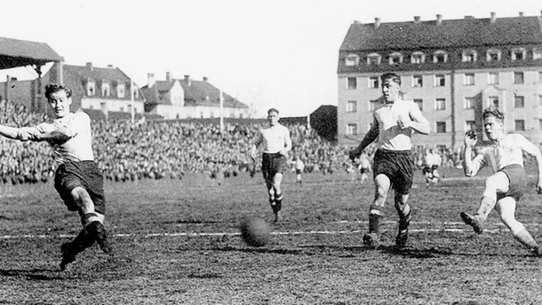Impacto da 2° Guerra mundial
O mundo inteiro parou por conta da guerra, consequentemente o futebol também.
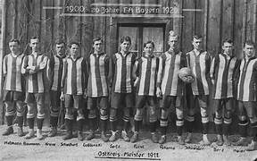Devido à origem judaica do clube, o Bayern foi discriminado e perseguido de inúmeras maneiras desde estrutura até a ser obrigado pelo governo a mudar seu escudo.
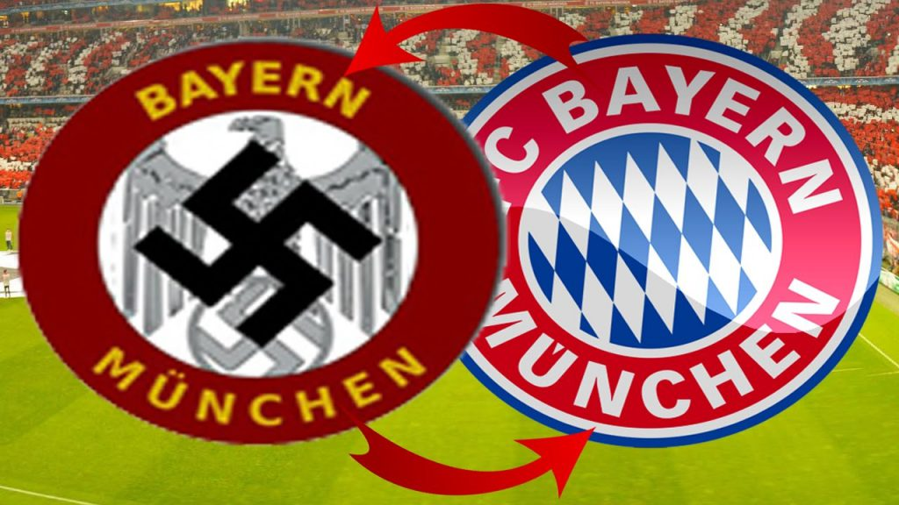Foram doze anos sob a ditadura fascista que fizeram com que o clube perdesse a sua posição de destaque nacional que tinha até então.
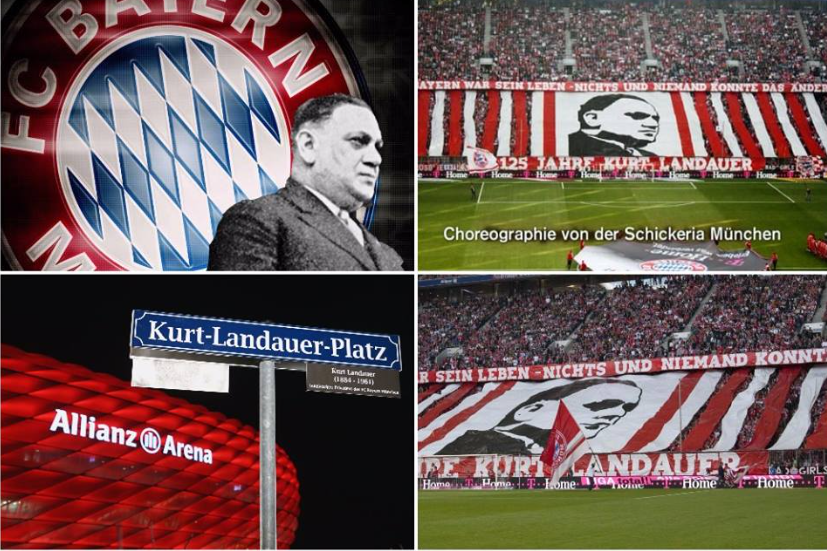Em julho de 1944, o Bayern teve sua sede do clube bombardeada. Apesar de tudo isso, os jogadores demonstraram grande espírito de equipe.
O capitão Conny Heidkamp fez o máximo para manter os jogadores unidos. Ele salvou os troféus que o clube havia conquistado em um carburador de madeira numa sala ao lado do estábulo na fazenda Ascholding onde foi salvo de toda a guerra e retirado anos depois.
A frustração que mudou o rumo do clube
Após anos de guerra, o futebol alemão voltou a sua ascenção, principalmente no final da década de 50 onde o Bayern conseguiu vencer a Copa DFB contra o Fortuna Düsseldorf por um placar de 1x0.
Após não ter sido convidado para ser membro fundador da bundesliga, o Bayern teve que diminuir os custos, ja que não participaria da principal competição do país. Dando oportunidade para os jovens das categorias de base do próprio Clube como Franz Beckenbauer, Sepp Maier e o recém chegado Gerd Müller nomes que iriam surpreender o mundo anos depois.

O grande domínio continental do Bayern
Em 1969 o Bayern conquistou a bundesliga pela primeira vez. e na temporada 1971-72 conseguiu vencer novamente de forma dominante, destaque para Gerd Müller que marcou 40 gols. foram feitos mais de 100 gols no campeonato, um time ofensivo que aplicou uma goleada de 11x1 no Borussia Dortmund e impressionou a todos.
1974:

Depois de um Grande ano de vitórias nacionais em 1973, o ano subsequente viria a ficar marcado na história com o início de uma hegemonia do Bayern na copa dos campeões.
Contra o atletico de madrid o Bayern venceu por 5-1 no agregado, com dois gols de Uli Hoeneß e Gerd Müller. O Bayern conquistava seu primeiro título continental e reconhecimento internacional
1975:

Na semifinal o Saint-Étienne foi derrotado, Com Roth e Müller marcando os gols na partida de volta em Munique avançando para a final da copa dos campeões.
Na segunda final consecutiva, o adversário foi o Leeds United, com o Bayern vencendo por 2 a 0 em Paris. Com gols de Franz Roth e Gerd Müller, conquistando o bicampeonato europeu consecutivo.
1976:

Havia grandes expectativas para o Clube, já que tinha sido campeão na última edição. Na Semifinal enfrentou o Real Madrid, o primeiro jogo em madrid ficou 1x1 com gol de Gerd müller, na segunda partida em munich, teve o brilho do astro alemão Gerd müller mais uma vez, fazendo 2 gols e avançando na competição.
A final seria contra o St. Etienne em Glasgow, Roth marcou para o bayern (1x0) fazendo com que o clube vencesse 3 vezes consecutiva, uma equipe dominante e consistente na europa.
A nova era do Bayern

A década de 80 ficou marcada pelos seus grandes jogadores e títulos nacionais. O clube teve como seus pilares o meio-campista Paul Breitner, e Karl-Heinz Rummenigge, grande goleador do clube na década.
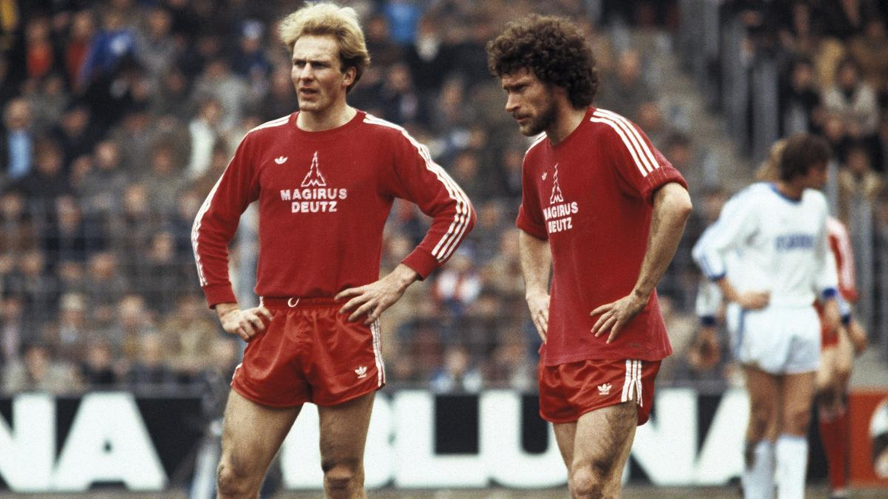Lothar Matthäus em anos subsequentes foi um grande líder, a equipe Já começou os anos 80 vencendo a Bundesliga de 1980. E seria seguido de mais cinco na mesma década, Em 1986, o FC Bayern ultrapassou o FC Nürnberg como o maior campeão alemão.
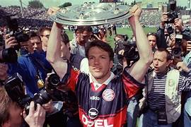Superação internacional:
A década de 90 foram anos de turbulência, com altos e baixos durante alguns anos.
.jpeg)
O Bayern perdeu títulos nacionais, copas e na copa dos campeões, mas a torcida permaneceu apoiando incansávelmente. Até que houve uma grande mudança na direção do clube que voltou fazendo boas campanhas.
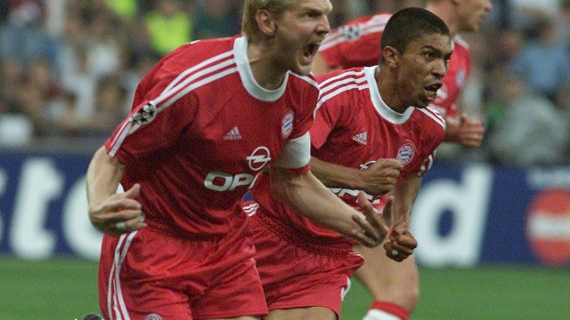Na temporada 2000/2001 o Bayern liderado por jogadores como Oliver Kahn, o capitão Effenberg e o brasileiro Elber levariam o clube a chegar a mais uma final de Champions league
Final de 2001:
.jpeg)
Onde enfrentaram a equipe do valencia, num grande confronto, com o valencia abrindo o placar ainda no primeiro tempo, o capitão Effenberg empatou o jogo para o bayern, após o término do tempo regulamentar, a final se encaminhou para a disputa de pênalti onde os torcedores do clube de Munique viram a estrela de Oliver Kahn brilhar defendendo a última cobrança ( 5x4 ) para o bayern, e pela 4° vez campeões da Europa.

Nova filosofia do Clube:
Os anos 2000 continuaram sendo um período marcante na história do clube, além de títulos da bundesliga e da copa da Alemanha na temporada 2002/2003 o time de Oliver Kahn e Michael Ballack lideraram o clube para a dobradinha.
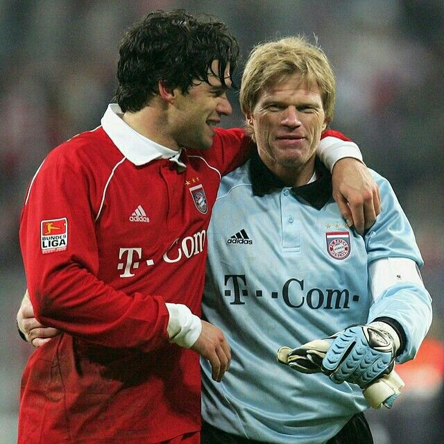Com a chegada do treinador Felix Magath, o Bayern conseguiu conquistar títulos da bundesliga e copa da alemanha, de forma consecutiva Os títulos vieram junto com a mudança do bayern para a Allianz arena.
Em maio de 2005 a equipe alemã mudou-se para oque seria a casa de troféus do clube até os dias atuais.
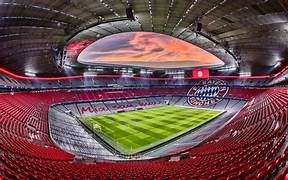Reformulação:
Após anos de instabilidades na Alemanha e champions league, o clube precisava reforçar o elenco.
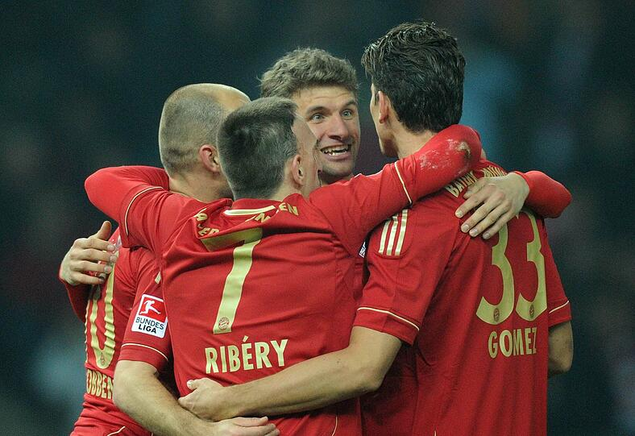A reformulação trouxe diversos jogadores como o ponta esquerda Frank Ribery, Arjen Robben, Mario Gomez e uma grande jóia da base do clube, o atacante Thomas Müller.
A Reviravolta:

O FCB finalizou a temporada de 2010 com a dobradinha da liga e da copa. Na final da Liga dos Campeões foi derrotado pela inter de milão em Madrid.apesar disso, a temporada foi de conquistas importantes para o clube
No verão de 2011, Jupp Heynckes assumiu o clube. Na Champions league liderou o bayern a uma grande campanha, vencendo o Olympique de Marseille (nas quartas-de-final) e Real Madrid (na semifinal). O fcb chegou à final da Liga dos Campeões de 2012, na Allianz Arena. O Bayern de Neuer, Müller, Robben, Ribéry, Lahn, e Schweinsteiger tinham uma missão, vencer a liga dos campeões contra a equipe do Chelsea.
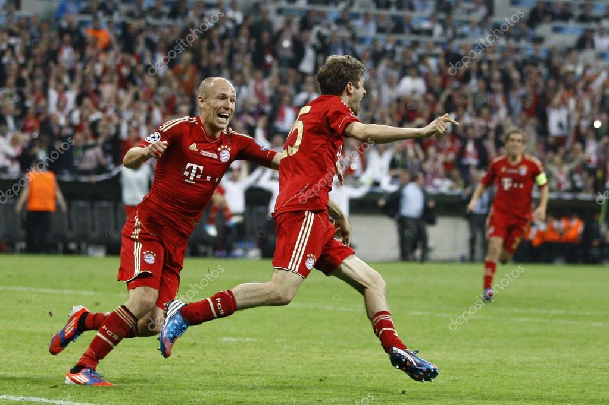O jogo começou extremamente equilibrado com Thomas müller abrindo o placar com um gol de cabeça, porém , minutos depois Didier Drogba empatou o jogo para o Chelsea também em um cruzamento na área.

Nos pênaltis o clube de londres se saiu melhor vencendo o Bayern por 4x3, com certeza foi uma frustração para os torcedores bávaros dentro de casa.
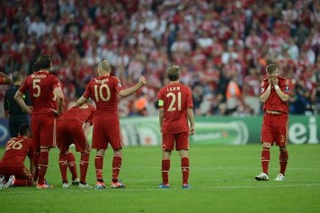O poderoso Bayern de Munich
Em 2013, o Bayern viria para uma das temporadas mais marcantes da história do futebol.

Após perder a champions na temporada anterior e o campeonato alemão 2 vezes consecutivas em 2010/11 e 2011/12, o Bayern fez na temporada 2012/2013, incríveis 95 pontos no campeonato, com mais de 20 pontos sobre o Dortmund, vencendo a bundesliga.
Ficou claro que o Bayern estava determinado a erguer o troféu também da Liga dos Campeões, quando nas semifinais venceram o Barcelona de Pep Guardiola e Lionel Messi por 7-0, e mostrou ao mundo a força do Bayern.
Na finalíssima, o holandês, Arjen Robben, marcou o gol da vitória aos 89 minutos de partida na vitória por 2 a 1 contra o Borussia Dortmund. O quinto título europeu marcou o fim de uma sequência infrutífera de 12 anos na Liga dos Campeões e a redenção do ponta direita do bayern.
Na copa dfb o Bayern também venceu. Enfrentando a equipe do Stuttgart na final, consagrando ainda mais a temporada, além do Bayern atingir marcos históricos, como o sexto troféu da Champions o Clube venceu a tríplice coroa nessa temporada.
Conclusão:
Em êxito, essa é a historia do grande clube da Baviera , que possui mais de 83 títulos em toda a sua trajetória, se você curtiu o conteúdo compartilhe com algum amigo e continue navegando nos nossos conteúdos similares a este. Com certeza tem alguma história relacionado ao nosso esporte que você irá se interessar.